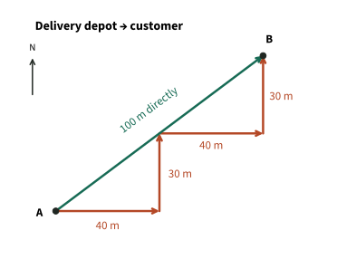
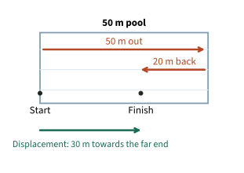
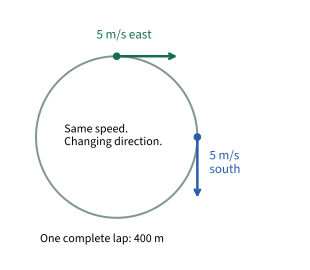
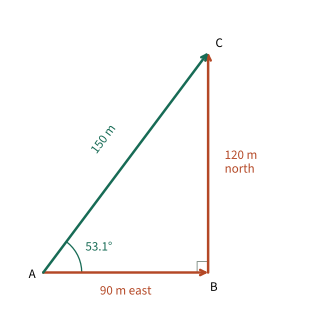

Distance, displacement,
speed and velocity
Think about a journey you know. Which route did you take? Where did you finish? How long did it take? Those three questions will help us make sense of distance, displacement, speed and velocity.
Distance and displacement

A delivery robot travels from the depot at A to a customer at B. It follows the paths around the buildings.
- Add the four orange lengths: the robot travels 140 m.
- Now ignore the turns. The green arrow joins A to B: 100 m in that direction.
We’ve answered two different questions. How much ground did the robot cover? That’s its distance. Where did it finish compared with where it started? That’s what its displacement tells us.
Distance
Total length of the path travelled.
- Include every part of the route.
- A scalar: magnitude only.
- SI unit: metre, m.
- Distance travelled cannot be negative.
Displacement
Change in position from start to finish.
- Use one straight arrow from A to B.
- A vector: magnitude and direction.
- SI unit: metre, m.
- For this route: 100 m, 36.9° north of east.
We’ll calculate a direction like this later.
Definition: displacement
distance in a specified direction from a point
Start at the point where the journey began. For displacement, follow the straight arrow to the finish. You don’t need to follow all the turns in the route.
Check-in 1 · choose A or B
The robot returns to the depot by a different route. Is its total displacement still 100 m?
Decide first, then explain your choice in one sentence.
Picture the robot back at A. Its start and finish are now the same point, so its displacement is 0 m. Its distance has increased because it travelled back. We would need the return route’s length to calculate the total distance.
Direction and signs
Before using a plus or minus sign, choose which way is positive. Along a straight line, the signs then tell us which of the two directions we mean.
- If east is positive, an eastward displacement is positive.
- A westward displacement is negative.
- A negative displacement tells you the direction. It does not mean a negative distance travelled.
For example, a lift moves from 12 m above the ground to 4 m above the ground. Taking upwards as positive:
The displacement is 8 m downwards. The distance travelled during that descent is 8 m.
Speed and velocity
Now imagine two trains travelling at 20 m s−1 in opposite directions. They have the same speed, but they aren’t moving the same way. Velocity includes that direction, so their velocities are different.
Definition: velocity
rate of change of displacement
Use displacement in this definition. Velocity is a vector. Its SI unit is m s−1, read as metres per second.
To find the average speed, look at the whole trip. Add up the distances, then add up the times, including any stops. Divide the total distance by that total time. Simply averaging the stage speeds only works when the stages last equally long.
Average speed
Divide the whole path length by the whole journey time.
Average velocity
Divide the start-to-finish displacement by the whole journey time.
For average velocity, first ask where the object finished compared with where it started. Put that displacement above the fraction line and the whole journey time below it. The symbols Δs and Δt stand for those changes in position and time. The arrow reminds us that direction matters. Use metres and seconds to get m s−1.
Speed
- Scalar: no direction needed.
- Use the total distance.
- Example: 20 m s−1.
Velocity
- Vector: state a direction or use agreed signs.
- Use the resultant displacement.
- Example: 20 m s−1 east.
For average velocity, which goes above the division line: distance or displacement?
Displacement. For speed, count the whole route. For velocity, compare start and finish. In both cases, divide by the whole journey time, including stops.
Example: a train journey with a stop
A train travels 1.2 km east in 60 s, waits for 30 s, then travels another 0.8 km east in 40 s.
Check-in 2 · choose A or B
The train stops moving for 30 s. Does the journey clock stop too?
No. Those 30 s still belong to the journey. Include them before you divide.
- Convert and add the distances: 1200 + 800 = 2000 m.
- Include the stop: total time = 60 + 30 + 40 = 130 s.
- Average speed: = 15.4 m s−1.
- Average velocity: 15.4 m s−1 east. The train moved along one straight line without reversing.
While the train is moving, its speed is 20 m s−1 in both stages. Why is its average speed lower? The clock kept running during the stop, even though the train covered no more distance.
Displacement at constant velocity
So far, we’ve divided displacement by time to find average velocity. Now turn that calculation around. If the velocity stays the same, multiply it by the time to find the displacement.
Constant velocity
s: displacement in m · v: constant velocity in m s−1 · t: elapsed time in s
A conveyor carries a parcel at a constant 0.80 m s−1 to the right for 15 s. It moves 0.80 m each second, so multiply by 15.
What if the velocity changes along the way? You can still multiply by time, but you must use the average velocity for that whole time. One reading taken during the journey won’t tell you enough.
Worked example: a swimmer changes direction
A swimmer completes a 50 m length in 30 s, then swims 20 m back in another 20 s. Find the average speed and average velocity for these 50 s. Before calculating, point to the start and finish on the diagram.

-
Distance: add both parts.50 + 20 = 70 m
-
Displacement: take motion towards the far end as positive.+50 − 20 = +30 m
-
Average speed:= 1.4 m s−1
-
Average velocity:= 0.60 m s−1towards the far end of the pool.
Why is the average speed larger than the magnitude of the average velocity?
The swimmer travels 70 m but finishes only 30 m from the start. We divide both by the same time, so the average speed is larger.
Use distance for speed; displacement for velocity.
Notice that the two stages last 30 s and 20 s. They don’t last equally long, so we use the total distance and total time instead of averaging the two speeds.
Constant speed around a bend

A runner completes a circular 400 m track at a constant speed of 5.0 m s−1.
- At the top, the runner moves east.
- At the right, the runner moves south.
What changed: the speed, the direction, or both?
The direction changed. Velocity includes direction, so the velocity changed even though the speed stayed at 5.0 m s−1.
One lap takes 80 s. Picture the runner arriving back at the start, just like the robot returning to its depot. Before calculating, ask yourself: what is the displacement now?
= 5.0 m s−1
= 0 m s−1
Without looking back, complete the definition: velocity is the rate of change of ______.
Say the full definition before reading on.
Displacement. The runner’s average velocity for the lap is zero because the start and finish match, not because the runner stood still.
Worked example: a two-dimensional journey
A delivery robot moves 90 m east in 45 s, then 120 m north in 60 s. Find its average speed and average velocity. Use the same method as before. The only extra step is finding the diagonal displacement.

-
Add the route lengths and times.
Distance = 90 + 120 = 210 m
Time = 45 + 60 = 105 s -
Find average speed.
= 2.0 m s−1
-
Find how far the finish is from the start.
The two route lengths meet at a right angle. The displacement is the diagonal, so Pythagoras gives
= 150 m. -
Find its direction.
Measure from east towards north. Opposite = 120 m; adjacent = 90 m.
tan θ =
θ = 53.1° north of east -
Find average velocity.
= 1.43 m s−1,
53.1° north of east.
Could the magnitude of the average velocity be greater than the average speed for this journey?
No. The straight route from start to finish cannot be longer than the route actually travelled. We divide both lengths by the same time, so the average velocity’s magnitude cannot be larger than the average speed. Here, 1.43 < 2.0, which fits that check.
Practice and recall
Write your working before reading each solution. Use the same three steps each time:
- Mark the start and finish. Choose a positive direction if needed.
- Find distance, displacement and total time. Include any stops.
- Choose what to divide by time. Distance for average speed; displacement for average velocity. Divide by time and include units and direction where needed.
A lift rises 18 m, then descends 6 m. The movement takes 12 s. Find both averages.
Solution: Distance = 18 + 6 = 24 m. Displacement = 18 − 6 = 12 m upwards. Average speed = 2.0 m s−1; average velocity = 1.0 m s−1 upwards.
A cyclist travels 60 m east in 10 s, waits 10 s, then returns in 20 s. What are the average speed and average velocity?
Solution: Distance = 120 m. Total time = 40 s, including the wait. Average speed = 3.0 m s−1. Displacement is zero, so average velocity = 0 m s−1.
A robot moves 30 m north and 40 m east in 50 s. Calculate its average speed and average velocity.
Solution: Distance = 70 m; displacement magnitude = = 50 m. Average speed = 1.4 m s−1. Average velocity = 1.0 m s−1, 36.9° north of east. The equivalent direction is 53.1° east of north.
Definitions and formulas to remember
Displacement
distance in a specified direction from a point
Velocity
rate of change of displacement
Journey calculations
Average speed
Average velocity
Resultant displacement divided by total time taken.
At constant velocity
- Distance and speed are scalars. Displacement and velocity are vectors.
- Use m for distance and displacement; use m s−1 for speed and velocity.
- Choose which direction is positive before using signs. Include the direction when you give a velocity.
- Include stationary time. Returning to the start gives zero displacement.
- Turning changes velocity even at constant speed.
- For each calculation, first decide whether you need the whole path or the start-to-finish displacement.